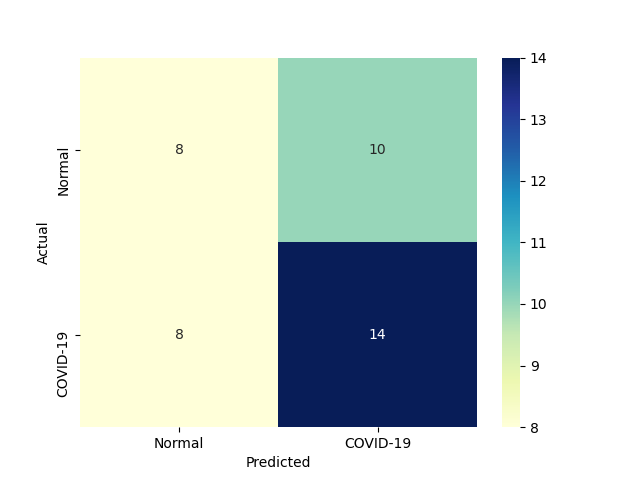
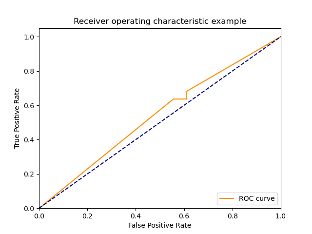

<table border="1" class="dataframe">
  <thead>
    <tr style="text-align: right;">
      <th></th>
      <th>method</th>
      <th>description</th>
      <th>train_time</th>
      <th>predict_time</th>
      <th>true_positive</th>
      <th>true_negative</th>
      <th>false_positive</th>
      <th>false_negative</th>
      <th>sensitivity</th>
      <th>specificity</th>
      <th>precision</th>
      <th>accuracy</th>
      <th>error</th>
      <th>f1</th>
      <th>confusion_matrix</th>
      <th>roc_curve</th>
    </tr>
  </thead>
  <tbody>
    <tr>
      <th>0</th>
      <td>BernoulliNBC</td>
      <td>Naive Bayes classifier for multivariate Bernoulli models</td>
      <td>0.246398</td>
      <td>0.120632</td>
      <td>14</td>
      <td>8</td>
      <td>10</td>
      <td>8</td>
      <td>0.636364</td>
      <td>0.444444</td>
      <td>0.583333</td>
      <td>0.55</td>
      <td>0.45</td>
      <td>0.608696</td>
      <td></td>
      <td></td>
    </tr>
  </tbody>
</table>